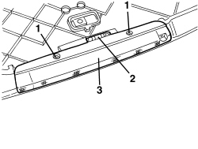

5550D16 THIRD BRAKE LIGHT - R+R
- Path
- Procedures > 55 ELECTRICAL EQUIPMENT > 5550 WARNING AND MANOEUVRING INDICATORS > 5550D BRAKE AND REVERSING LIGHTS > 5550D16 THIRD BRAKE LIGHT - R+R
- Kind
- repair procedure (removal / refitting; the operation number is the code)
- Applies to
- all engines; all production periods
- Interactive page
- https://sloeber94.github.io/elrnDB/alfa/159/en/#/939011052
Applies to: all engines; all production periods
 Removing
Removing
 Refitting
Refitting1. Move the third brake light (1a) backwards and release the retainers (1b), then lift it up releasing the retainers (1c).
2. Disconnect the electrical connection.
Description | Component |
|---|---|
ADDITIONAL REAR LIGHT (THIRD BRAKE LIGHT) |
3. Keep the third brake light and moulding.
4. If necessary, undo the bolts (4a) and separate the third brake light (4b) from the moulding (4c).

Applies to: all engines; all production periods
Refitting
Removing- Check that the third brake light is not damaged.
- If removed, place the light on the moulding and secure it using the bolts.
- Connect the electrical connection.
- Place the third brake light in position and attach the retainers.
- Check the operation of the third brake light.
Applies to: all engines; all production periods; only with equipment: Station Wagon
Removing
RefittingOp. 7040G36 BULB HOLDER FOR LOAD CARRYING COMPARTMENT lighting on tailgate - R.R.
Op. 7015A05 TAILGATE LOWER INTERIOR PANEL-R R
Op. 7015A06 TAILGATE UPPER INTERIOR PANEL - R.R.
Op. 7210G76 REAR SPOILER - R.R.
1. Working at the bench on the spoiler, undo the bolts fixing the third brake light.
2. Release the electrical half-connection from the retainer.
3. Remove the third brake light.

Applies to: all engines; all production periods; only with equipment: Station Wagon
Refitting
Removing- Check that the third brake light is not damaged.
- Position the third brake light.
- Attach the electrical half-connection to the retainer.
- Tighten the third brake light fixing bolts.
Op. 7210G76 REAR SPOILER - R.R.
Op. 7015A06 TAILGATE UPPER INTERIOR PANEL - R.R.
Op. 7015A05 TAILGATE LOWER INTERIOR PANEL-R R
Op. 7040G36 BULB HOLDER FOR LOAD CARRYING COMPARTMENT lighting on tailgate - R.R.
- Check the operation of the third brake light.
Topics linked from this page (5)
- 7015A05 TAILGATE LOWER INTERIOR PANEL-R R
- 7015A06 TAILGATE UPPER INTERIOR PANEL - R.R.
- 7040G36 BULB HOLDER FOR LOAD CARRYING COMPARTMENT lighting on tailgate - R.R.
- 7210G76 REAR SPOILER - R.R.
- F040 ADDITIONAL TAIL-LIGHT ('THIRD BRAKE LIGHT')
Topics that link to this page (11)
- 5050C10 REAR WINDOW WASHER JET - R+R CLEAN AND/OR POSITION
- 5505C41 PASSENGER COMPARTMENT WIRING - R.R
- 5550D17 THIRD BRAKE LIGHT BULB(S) - R.R
- 5580T40 BOSE SOUND SYSTEM SUBWOOFER - R.R.
- 7040H80 REAR PARCEL SHELF - R.R.
- 7065B10 REAR SEAT BELT (ONE), LEFT OR RIGHT - R.R.
- 7065B18 CENTRE REAR SEAT BELT - R.R.
- E2021 BRAKE LIGHTS - WIRING DIAGRAM
- E2021 BRAKE LIGHTS - COMPONENT LOCATION
- E2021 BRAKE LIGHTS - WIRING DIAGRAM
- E2021 BRAKE LIGHTS - COMPONENT LOCATION